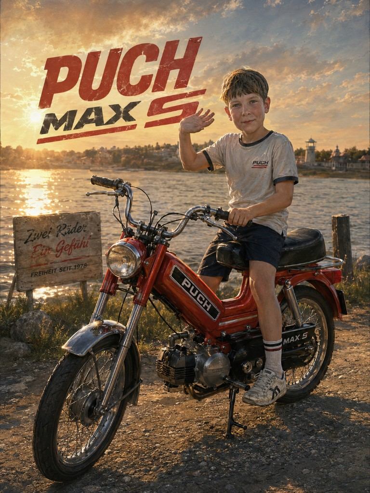
⚠️ Wichtig vor dem Start
Dieses Heft ist ein Lernheft. Ein Kind darf nicht allein schrauben, tanken, die Zündung einstellen oder im Verkehr fahren. Bremsen, Benzin, Elektrik und Probelauf macht immer ein Erwachsener.
Du lernst die Teile kennen, verstehst Motor und Zündung, findest typische Fehler und bekommst eine sichere Wartungs-Checkliste.
So benutzt du dieses Heft
Du bist der Besitzer deiner Puch Maxi S. Deine wichtigste Aufgabe ist nicht schnell schrauben, sondern genau schauen, ruhig denken und sicher arbeiten.
Anschauen, melden, mitlesen
Mithelfen – nur mit Erwachsenem
Nur Erwachsene / Werkstatt
Drei Regeln gelten immer:
- Motor aus, Schlüssel/Schalter aus, Moped sicher abstellen.
- Keine Flammen, keine Zigarette, keine Funken bei Benzin.
- Nach dem Schrauben prüft ein Erwachsener Bremsen, Gasgriff und alle Schrauben.
🏍️ Was ist eine Puch Maxi S?
Die Puch Maxi S ist ein kleines, altes Moped mit einem luftgekühlten Zweitaktmotor. Viele Maxi S haben einen E50- oder E50A-Automatikmotor. Manche ähnliche Modelle können andere Teile haben.
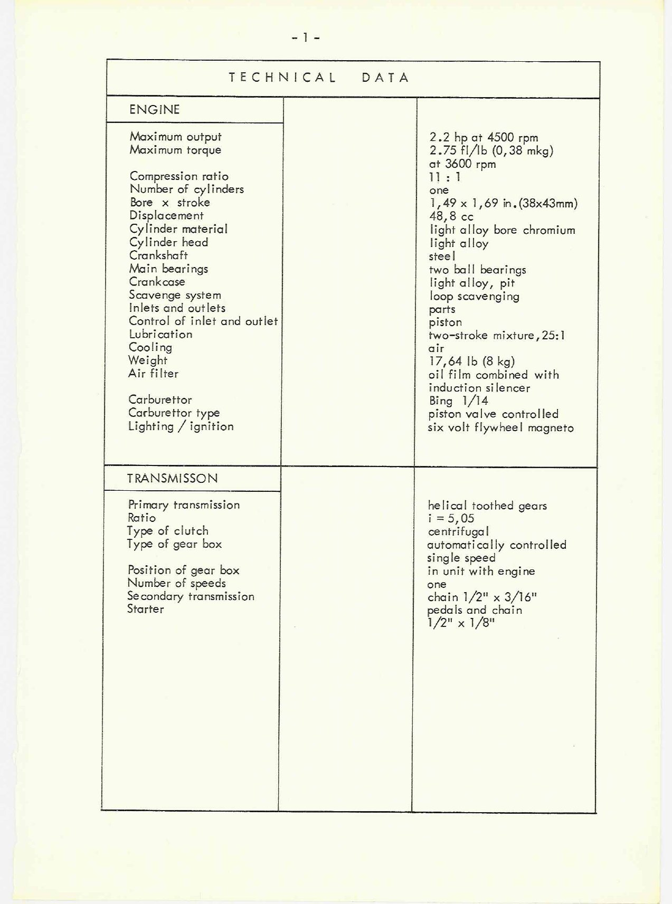
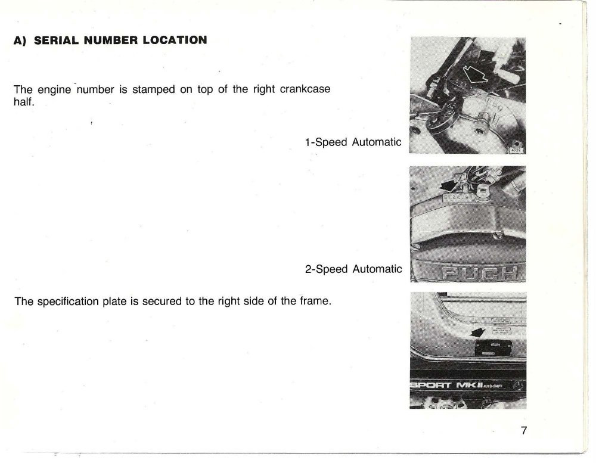
🔧 Die wichtigsten Teile
| Teil | Aufgabe | Was oft passiert |
|---|---|---|
| Motor | macht aus Benzin-Luft-Gemisch Bewegung | wird heiß, braucht Öl im Benzin, saubere Kühlung |
| Zündung | macht im richtigen Moment den Funken | Kerze, Stecker, Unterbrecher, Kondensator werden alt |
| Vergaser | mischt Luft und Benzin | Düse verstopft, Schwimmer klemmt |
| Kette | bringt Kraft zum Hinterrad | wird trocken, längt sich, wird schmutzig |
| Bremsen | machen langsam und halten an | Züge und Beläge verschleißen |
| Reifen | halten Kontakt zur Straße | verlieren Luft, werden rissig oder hart |
Bedienung am Lenker
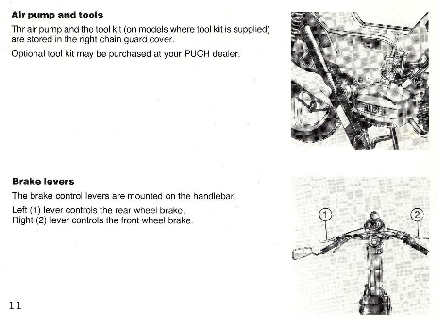
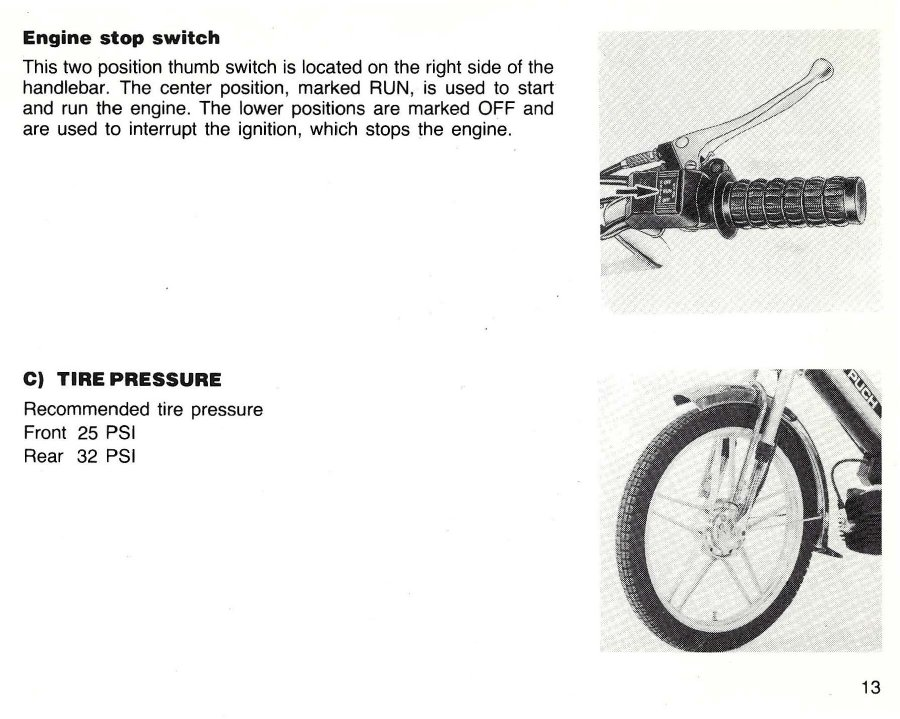
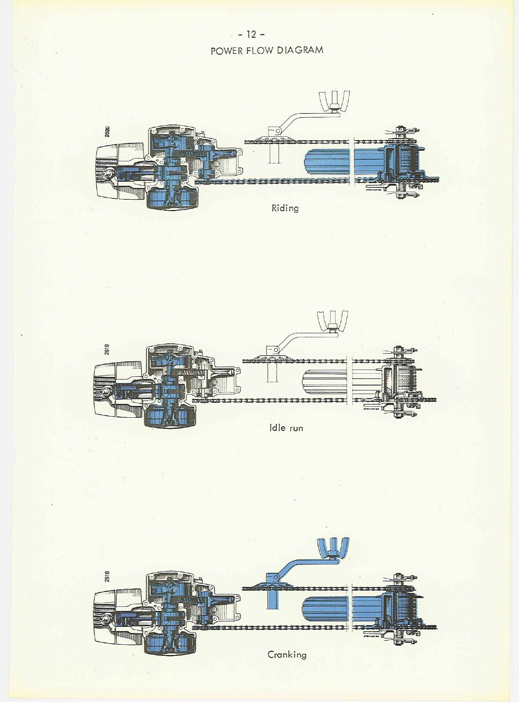
🧠 Wie der Motor denkt
Ein Motor ist kein Zauber. Er braucht vier Dinge:
- Benzin + Luft – der Vergaser macht ein Gemisch.
- Funke – die Zündung entzündet das Gemisch.
- Druck im Zylinder – Kolben, Ringe und Dichtungen müssen dicht sein.
- Auspuff frei – Abgase müssen heraus.
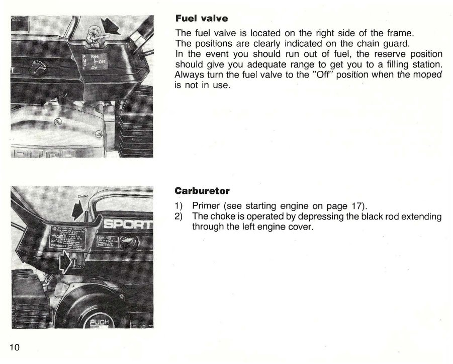
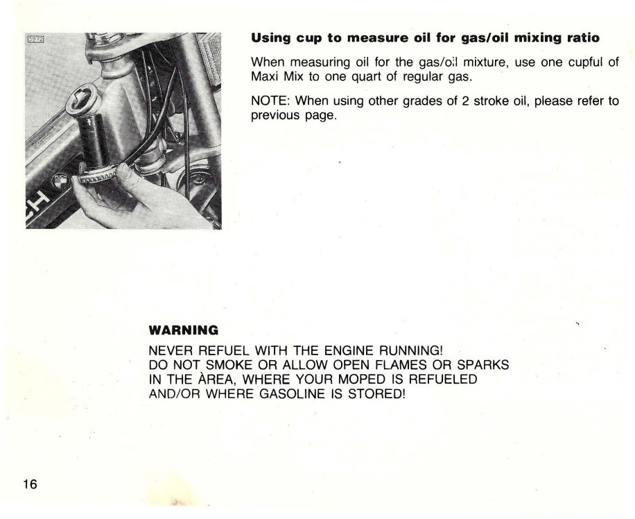
✅ Sichere Checks vor jeder Fahrt
Diese Liste ist zum Schauen und Melden. Nicht einfach losfahren, wenn etwas komisch ist.
- Bremsen greifen und Hebel fühlen sich normal an.
- Gasgriff geht von selbst zurück.
- Reifen haben Luft und keine Risse.
- Licht und Rücklicht funktionieren (wenn vorhanden).
- Nichts tropft: kein Benzin, kein Öl.
- Kette ist nicht trocken, rostig oder extrem locker.
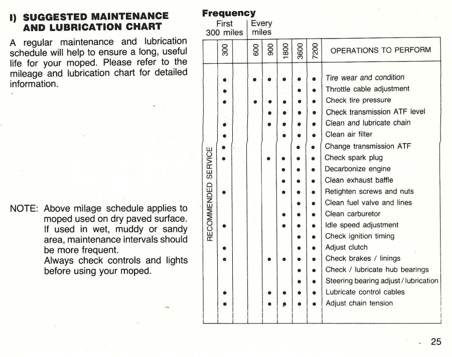
⚡ Die Zündung – der Mini-Blitz
Die Zündung ist wie ein kleiner Blitzmacher. Bei der Puch Maxi erzeugt das drehende Polrad mit Magneten Strom. Der Strom läuft durch Spulen, Kabel und Stecker zur Zündkerze. Dort springt ein Funke über.
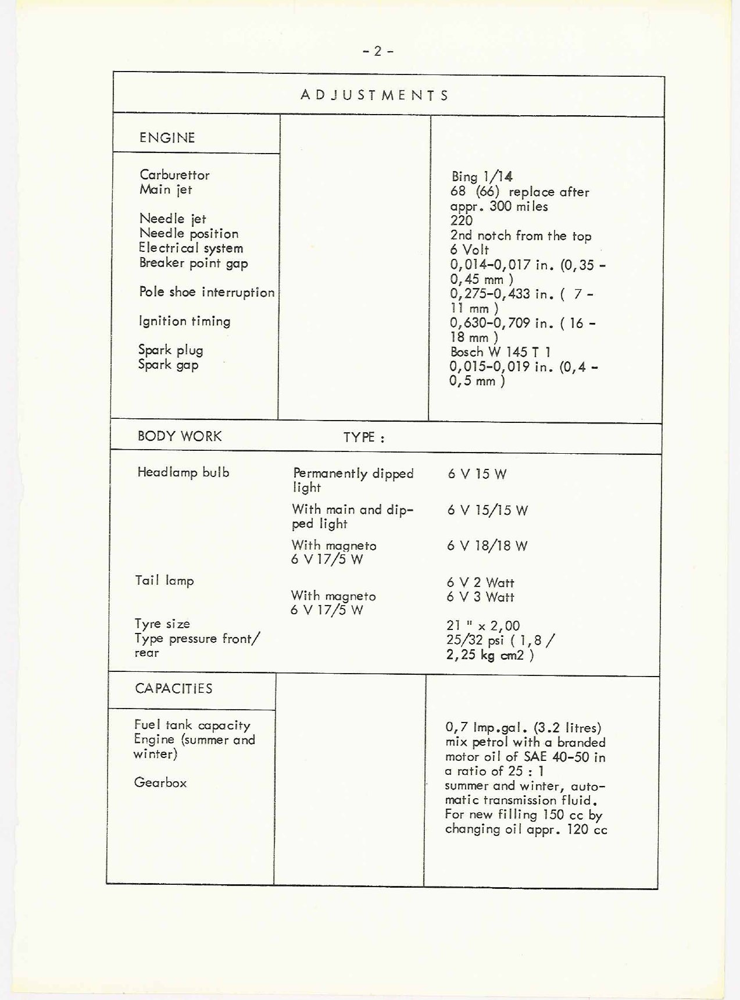
Warum die Zündung oft Ärger macht
- Zündkerze wird schwarz, nass oder alt.
- Kerzenstecker sitzt locker oder ist korrodiert.
- Zündkabel ist brüchig oder schlecht eingeschraubt.
- Unterbrecherkontakt nutzt sich ab.
- Kondensator kann alt werden – dann stottert die Maxi oft, besonders warm.
- Stop-Schalter oder ein Kabel kann den Funken auf Masse legen.
🔌 Die Zündkerze
Die Kerze hat unten zwei Metallstellen. Dazwischen springt der Funke. Ist der Spalt falsch, ist der Funke schlechter. Typisch: 0,4–0,5 mm.
| So sieht sie aus | Was es bedeuten kann | Was tun? |
|---|---|---|
| hellbraun/grau | oft normal | einbauen, wenn sonst alles stimmt |
| schwarz und trocken | zu fett, Luftfilter zu, alte Kerze | Erwachsener prüft Luft/Vergaser/Kerze |
| nass | zu viel Benzin oder kein Funke | trocknen lassen, Funke suchen |
| weiß/sehr hell | möglich: zu mager oder zu heiß | nicht hart fahren; Erwachsene/Werkstatt |
⏱️ Unterbrecher und Zündzeitpunkt
Der Unterbrecher ist ein kleiner Schalter im Motor. Er öffnet sehr kurz – genau dann entsteht der Zündfunke. Darum muss sein Abstand stimmen.
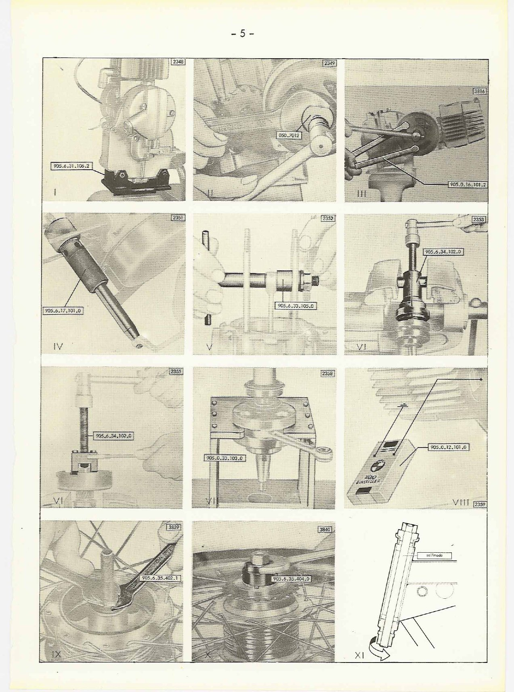
| Stelle | Wert | Einfach erklärt |
|---|---|---|
| Zündkerze | 0,4–0,5 mm | Spalt, über den der Funke springt |
| Unterbrecher | 0,35–0,45 mm | Spalt, wenn der Kontakt ganz offen ist |
| Zündzeitpunkt | ca. 0,8–1,2 mm vor OT | Funke kommt kurz bevor der Kolben ganz oben ist |
| E50 Getriebeöl | ATF Type F, ca. 170 cc | Öl für den 1-Gang-Automatikbereich |
OT = oberer Totpunkt – der höchste Punkt des Kolbens. Der Funke kommt etwas vorher, weil das Gemisch einen kleinen Moment braucht, bis es richtig brennt.
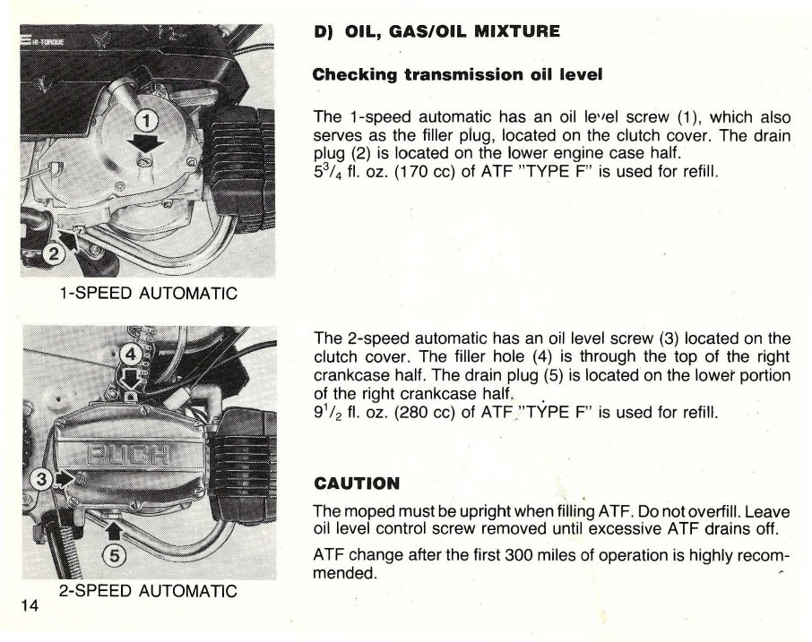
🔍 Fehlersuche: Startet nicht
Ruhig suchen – zuerst Benzin, dann Funke, dann Luft/Choke. Immer erst die einfachen Dinge prüfen!
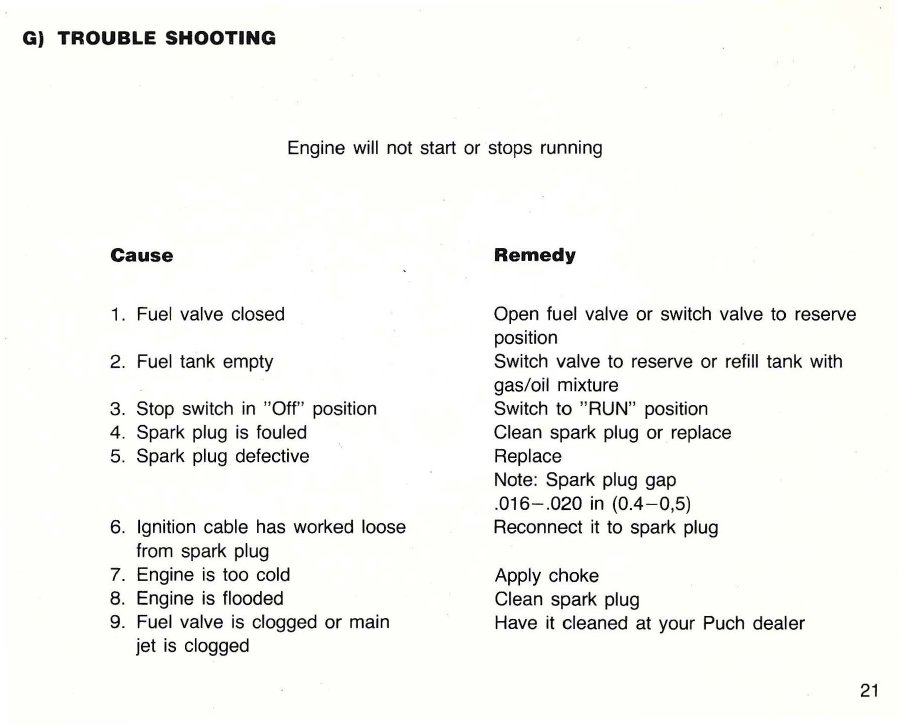
- Benzin: Tank nicht leer, Benzinhahn offen, Schlauch nicht abgeknickt, Düse nicht verstopft.
- Funke: Stop-Schalter auf RUN, Kerze sauber, Stecker fest, Kabel gut, dann Unterbrecher/Kondensator prüfen.
- Luft: Luftfilter sauber, Choke nicht hängend, Vergaser nicht voll Schmutz.
- Wenn alles stimmt und sie trotzdem nicht läuft: Kompression, Simmerringe, Auspuff, Kupplung oder Vergaser genauer prüfen.
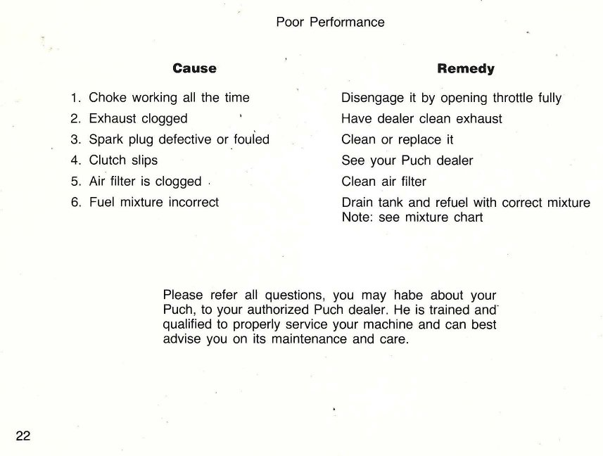
⛓️ Kette, Bremsen, Reifen
Diese Teile sind sicherheitswichtig. Ein Kind darf sie anschauen und melden. Einstellen macht ein Erwachsener.
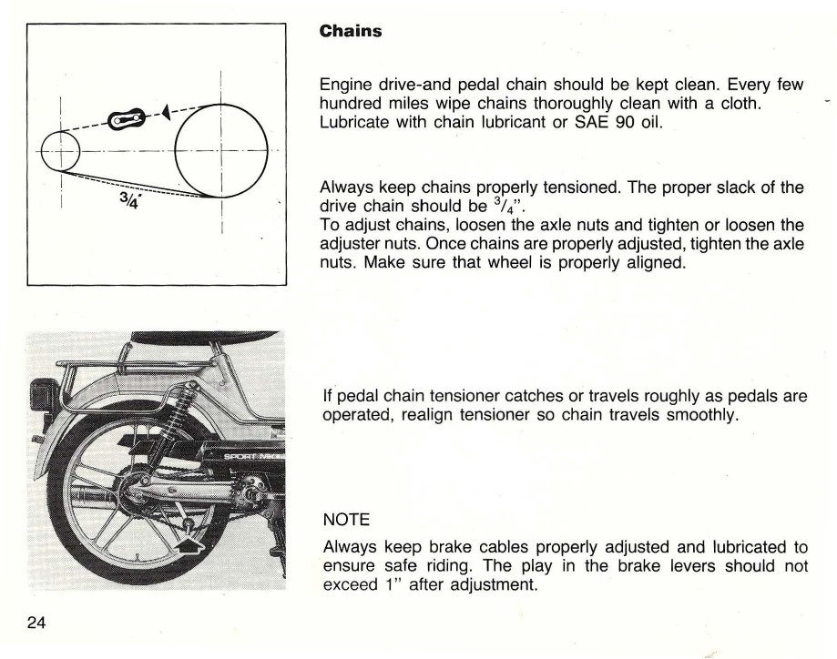
Kette
- Zu trocken: knirscht, rostet, verschleißt schnell.
- Zu straff: Lager und Kette leiden.
- Zu locker: kann abspringen.
- Nach dem Einstellen muss das Hinterrad gerade stehen.
Bremsen
- Hebel dürfen nicht bis zum Lenker durchgehen.
- Züge sollen leicht laufen und nicht aufdrieseln.
- Bei schlechtem Bremsen: nicht fahren.
Reifen
- Risse, Beulen oder sehr alte harte Reifen sind gefährlich.
- Reifendruck vor der Fahrt prüfen: laut Handbuch vorn 25 psi, hinten 32 psi (ca. 1,7 / 2,2 bar).
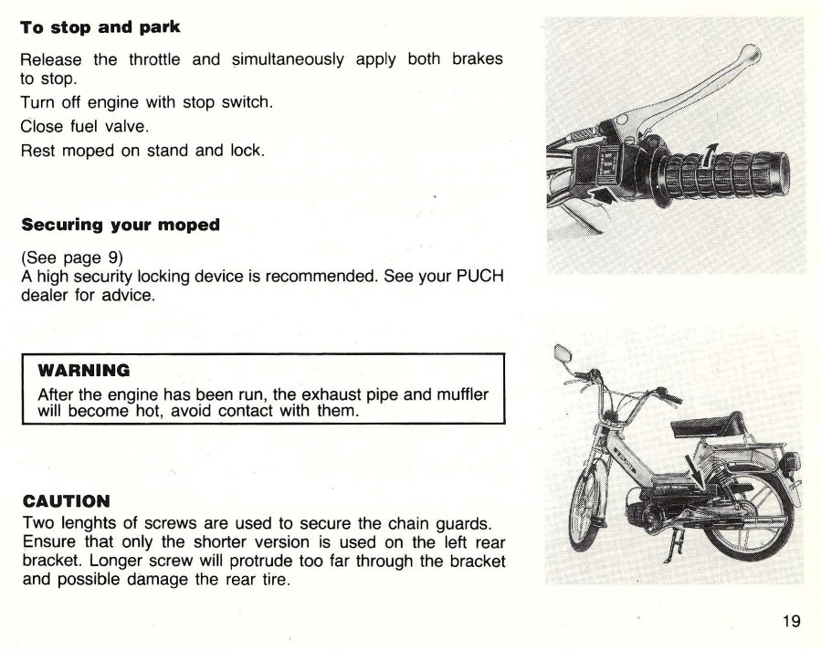
⛽ Benzin, Luftfilter und Vergaser
Der Vergaser ist wie eine kleine Küche: Er mischt Benzin und Luft. Ist die Küche schmutzig, läuft der Motor schlecht.
| Problem | So merkt man es | Erster sicherer Schritt |
|---|---|---|
| Dreck im Benzin | springt schlecht an, geht aus | Benzinschlauch/Filter/Benzinhahn ansehen |
| Hauptdüse verstopft | nimmt kein Gas an | Vergaser durch Erwachsenen reinigen lassen |
| Luftfilter zu | wenig Leistung, schwarze Kerze | Luftfilter reinigen/ersetzen |
| Choke hängt | läuft zu fett, raucht stark | Choke-Bewegung prüfen |
| Falsches Gemisch | Rauch, Hitze, schlechter Lauf | nicht raten; Setup notieren |
📦 Ersatzteile: Was man sinnvoll bereithält
Kaufen nach System, nicht nach Panik:
| Bereich | Sehr sinnvoll | Mit Erwachsenen prüfen |
|---|---|---|
| Zündung | Kerze, Kerzenstecker, Zündkabel | Unterbrecher, Kondensator, Spule |
| Vergaser/Benzin | Benzinschlauch, Filter, Dichtungen | Düsen, Schwimmernadel, Benzinhahn |
| Luft/Auspuff | Luftfilter, Auspuffdichtung | Auspuffeinsatz, Krümmerdichtung |
| Antrieb | Kettenschloss, Kettenöl | Kette, Ritzel, Lager |
| Bremsen/Züge | Bremszug, Gaszug | Bremsbacken, Hebel, Federn |
| Räder | Schlauch, Ventil | Reifen, Radlager |
📅 Wartung als Lernroutine
Wartung bedeutet: kleine Dinge regelmäßig machen, damit keine großen Dinge kaputtgehen.
Vor jeder Fahrt – Kind darf mitsprechen
- Sieht ein Reifen platt aus?
- Ist unter dem Moped ein Fleck?
- Kommt der Gasgriff sofort zurück?
- Fühlen sich beide Bremshebel normal an?
- Klingt etwas lose beim vorsichtigen Bewegen?
Jede Woche oder nach Regen – mit Erwachsenen
- Kette reinigen und geeignet ölen.
- Luftfilter ansehen.
- Kabel und Züge auf Knicke und Rost prüfen.
- Schrauben nur kontrollieren, nicht wild nachziehen.
Saisonarbeit – Erwachsene/Werkstatt
- Getriebeöl ATF prüfen/wechseln.
- Zündkerze, Unterbrecher, Kondensator und Zündzeitpunkt prüfen.
- Vergaser und Benzinhahn reinigen.
- Bremsbelag, Radlager, Lenkkopflager und Reifenalter prüfen.
- Auspuff auf Verkokung und Dichtheit prüfen.
🛠️ Werkzeug und Schrauber-Regeln
| Werkzeug | Wofür? | Wer? |
|---|---|---|
| Lappen + Handschuhe | Putzen, Benzin/Öl nicht an die Haut | Kind mit Aufsicht |
| Reifendruckmesser | Luftdruck prüfen | Kind darf ablesen |
| Kerzenschlüssel | Zündkerze herausdrehen | Erwachsener |
| Fühlerlehre | Kerzen- und Unterbrecherabstand | Erwachsener |
| Messuhr | OT und Zündzeitpunkt | Erwachsener/Werkstatt |
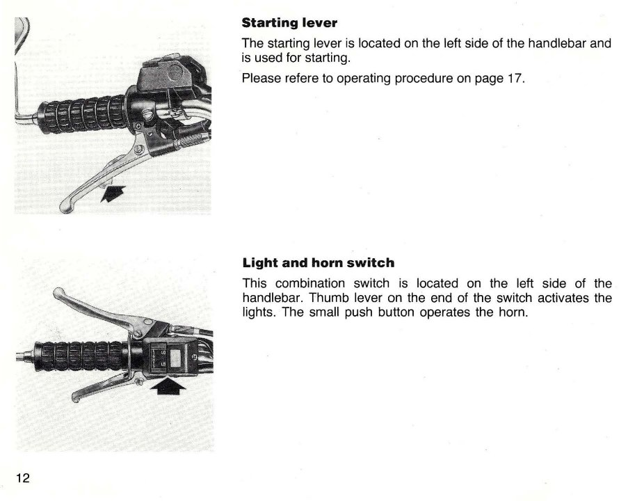
Die 5 Schrauber-Regeln:
- Vorher Foto machen, damit man weiß, wie es zusammen war.
- Kleine Schrauben in eine Schale legen.
- Nie mit Gewalt. Erst verstehen, dann drehen.
- Nach Benzin/Öl Hände waschen.
- Nach jeder Arbeit: Erwachsener macht Sicherheitskontrolle.
🗺️ Meine Maxi-Karte
Diese Karte ausfüllen, bevor Ersatzteile gekauft werden. Sie hilft, Fehlkäufe zu vermeiden.
❓ Kleines Quiz
👨🔧 Für Erwachsene: Kurzwerte
Werte vor der Arbeit am konkreten Fahrzeug gegenprüfen – Baujahr, Motor, Vergaser und Umbauten können abweichen.
| Thema | Wert | Quelle |
|---|---|---|
| Zündkerzenspalt | 0,4–0,5 mm | Handbuch S1 + S2 |
| Unterbrecherspalt | 0,35–0,45 mm | Handbuch S2 |
| Zündzeitpunkt E50 | 0,8–1,2 mm vor OT | Handbuch S2 |
| E50 ATF | ATF Type F, ca. 170 cc | Handbuch S1 + S2 |
| Kettenspiel | 3/4 Zoll | Handbuch S1 |
| Reifendruck | 25 psi vorn, 32 psi hinten | Handbuch S1 |
📋 Herkunft der Daten und Bilder
Dieses HTML-Lernheft wurde am 5. Juni 2026 erstellt.
Textquellen
- Kinderanleitung: Puch_Maxi_S_Kinderanleitung_10_Jahre.docx (im Projektordner) – vereinfachte deutsche Erklärungen für Kinder.
- S1 – Bedienungshandbuch: maxi-s.pdf (Puch Maxi Owner's Manual, 32 Seiten) – Bedienung, Wartung, Fehlersuche.
- S2 – Werkstatthandbuch: maxi-s-2.pdf (Puch maxi Workshop Manual, 31 Seiten) – Technische Daten, Einstellwerte, Reparatur.
- S3: maxi-s-3.pdf (Korado Owners Manual, 32 Seiten) – verwandtes Puch-Modell.
- S4: maxi-s-4.pdf (Ersatzteilkatalog, 127 Seiten) – Teileübersicht.
Bildverarbeitung
- Alle Fotos in
bilder/maxi-s/,bilder/maxi-s-2/usw. wurden mitpdftoppmaus den Original-PDFs gerendert (150 dpi, JPEG). - Keine Bilder wurden verändert oder neu gezeichnet – es sind echte Scans aus den Handbüchern.
- Deutsche Bildunterschriften wurden für Kinder verständlich ergänzt; Originaltexte stehen in den PDFs auf Englisch.
Verwendete Handbuchseiten (Auswahl)
| Kapitel | Bilddatei | Original |
|---|---|---|
| Titelseite | bilder/titelbild.png | Eigenes Titelbild (Juni 2026) |
| Handbuch-Deckblätter | maxi-s/seite-01, maxi-s-2/seite-01 | Owner's + Workshop Manual Cover |
| Technische Daten | maxi-s-2/seite-04 | Technical Data |
| Seriennummer | maxi-s/seite-08 | Serial Number Location |
| Bremsen / Stopschalter | maxi-s/seite-12, seite-14 | Operating Controls |
| Kraftfluss | maxi-s-2/seite-16 | Power Flow Diagram |
| Benzin / Vergaser | maxi-s/seite-11, seite-17 | Fuel Valve, Gas/Oil Mix |
| Wartungsplan | maxi-s/seite-26 | Maintenance Chart |
| Einstellwerte | maxi-s-2/seite-05 | Adjustments |
| Fehlersuche | maxi-s/seite-22, seite-23 | Trouble Shooting |
| Kette | maxi-s/seite-25 | Chains |
| Parken | maxi-s/seite-20 | Stop and Park |
| Getriebeöl | maxi-s/seite-15 | Transmission Oil |
| Werkzeuge | maxi-s-2/seite-08 | Special Tools |